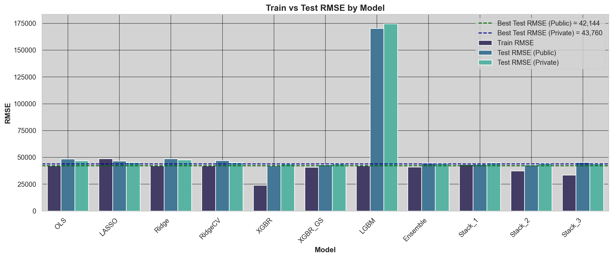

# All Libraries Needed
# !pip install numpy pandas seaborn matplotlib scikit-learn xgboostHome Pricing Prediction Competition
STA 9890 Final Project
1. Introduction
This is a brief paper reflecting on the final project for STA 9890.
This project focused on data preparation, followed by regression modeling techniques.
Below is an outline for how the project was constructed along with some of the code we ran to get the task done.
The GitHub repository for this project can be found here.
2. Background Context
For this project, the class was tasked with predicting home prices in an unknown metropolitan area out west (later revealed to be the Houston Metro Area).
As a class, we competed with our peers on Kaggle to submit a prediction-set of homes and their 2019 price, the y-Target.
My best model’s Training RMSE was 24,121 with a Public-Leaderboard score of 42,143 and a Private-Leaderboard score of 43,759 – ranking for 15th place of 27th. Fortunately, our MSE was still fairly reasonable on the leaderboard, though. w This project was entirely done in Python on JupyterNotebook. For simplicity of using a Quarto doc, I’ve migrated the code to R.
You can view the Workfiles here on GitHub.
3. Data Formatting and EDA
3a. Functions
The below functions are used in the importation, cleaning and modeling of the data. Some are built based on previous work while others were used during those processes.
pip install (or conda install) the needed packages
Libraries, display settings and site URL
Code
import numpy as np
import pandas as pd
pd.set_option('display.max_columns',50)
pd.set_option('display.max_rows',100)
import seaborn as sns
import matplotlib
import matplotlib.pyplot as plt
%matplotlib inline
import warnings
warnings.filterwarnings('ignore')
from sklearn.experimental import enable_hist_gradient_boosting
from sklearn.ensemble import HistGradientBoostingRegressor
from sklearn.metrics import mean_squared_error
from xgboost import XGBRegressor
PATH = '../data/pc/'
URL = "https://michael-weylandt.com/STA9890/competition_data/"Functions
Code
# Read in csv files from site
def read_gh(URL, f):
return pd.read_csv(URL + f)
# Groups "rare" (low frequency) items from a column
def group_rare_categories(df, column, threshold=100, new_label='Other'):
"""
Replace categories in a column that appear fewer than `threshold` times with `new_label`.
Args:
df (pd.DataFrame): DataFrame to process
column (str): Name of the column to transform
threshold (int): Frequency threshold below which values are replaced
new_label (str): Label to replace rare categories with
Returns:
pd.DataFrame: Updated DataFrame with rare values grouped
"""
value_counts = df[column].value_counts()
rare_values = value_counts[value_counts < threshold].index
df[column] = df[column].apply(lambda x: new_label if x in rare_values else x)
return df
# Cleans the Building DATAFRAME files
def clean_building_dfs(df):
tfcols = ['elevator','has_cooling','has_heat']
for col in tfcols:
df[col] = df[col].fillna(0).astype(int)
quality_map = {
'F':0,
'E':1,
'D':2,
'C':3,
'B':4,
'A':5,
'X':6
}
df['quality'] = df['quality'].map(quality_map)
quality_description_map = {
'Poor':0,
'Very Low':1,
'Low':2,
'Average':3,
'Good':4,
'Excellent':5,
'Superior':6
}
df['quality_description'] = df['quality_description'].map(quality_description_map)
bc_map = {
'Unsound':0,
'Very Poor':1,
'Poor':2,
'Fair':3,
'Average':4,
'Good':5,
'Very Good':6,
'Excellent':7
}
df['building_condition'] = df['building_condition'].map(bc_map)
grade_map = {
'E-':1.3,
'E':1.6,
'E+':1.9,
'D-':2.3,
'D':2.6,
'D+':2.9,
'C-':3.3,
'C':3.6,
'C+':3.9,
'B-':4.3,
'B':4.6,
'B+':4.9,
'A-':5.3,
'A':5.6,
'A+':5.9,
'X-':6.3,
'X':6.6,
'X+':6.9
}
df['grade'] = df['grade'].map(grade_map)
pc_map = {
'Unsound':0,
'Very Poor':1,
'Poor':2,
'Fair':3,
'Average':4,
'Good':5,
'Very Good':6,
'Excellent':7
}
df['physical_condition'] = df['physical_condition'].map(pc_map)
df.loc[df['foundation_type'] == 'Basement and Basement', 'foundation_type'] = 'Basement'
df.loc[(df['foundation_type']=='Basement and Slab')|(df['foundation_type']=='Crawl Space and Slab')|(df['foundation_type']=='Basement and Crawl Space')|
(df['foundation_type']=='Basement and Pier and Beam')|(df['foundation_type']=='Pier and Beam')|
(df['foundation_type']=='Pier and Beam and Pier and Beam')|(df['foundation_type']=='Pier and Beam and Slab'),'foundation_type'] = 'Mixed'
dummies = pd.get_dummies(df['foundation_type'], prefix='foundation').astype('Int64')
df = pd.concat([df, dummies], axis=1)
df = group_rare_categories(df, 'exterior_walls', threshold=1000, new_label='Other')
# Keywords to extract
keywords = [
'Brick Veneer',
'Brick Masonry',
'Concrete Block',
'Vinyl',
'Stucco',
'Stone',
'Other'
]
# Create 1/0 dummy columns based on substring presence
for key in keywords:
col_name = key.replace(' ', '_').lower() # e.g., 'Brick Veneer' → 'brick_veneer'
df[col_name] = df['exterior_walls'].fillna('').str.contains(key).astype('int8')
df = df.drop(['exterior_walls','foundation_type'],axis=1)
return df
# appends new accounts to running list of unique accounts
def append_new_accts(df_base, df_new, year):
existing_accts = set(df_base['acct'])
new_entries = df_new[~df_new['acct'].isin(existing_accts)][['acct']].copy()
new_entries['year'] = year
return pd.concat([df_base,new_entries],ignore_index=True)
# Function to count occurrances of a specific string value
def count_values(df,value:str):
"""
Returns printout of whatever character you're looking for across the dataset
"""
total_rows = len(df)
val_counts = []
for col in df.columns:
count = (df[col] == value).sum()
if count > 0:
percent = (count / total_rows) * 100
val_counts.append((col, count, percent))
# Sort by count descending
val_counts.sort(key=lambda x: x[1], reverse=True)
# Print results
print(f"{'Column':<30} {'? Count':>15} {'% of Rows':>12}")
print("-" * 60)
for col, count, percent in val_counts:
print(f"{col:<30} {count:>15,} {percent:>11.2f}%")
# function to count NULLs in the columns of a df
def count_nulls(df, top_n=10):
total_rows = len(df)
null_counts = []
for col in df.columns:
count = df[col].isna().sum()
if count > 0:
percent = (count / total_rows) * 100
null_counts.append((col, count, percent))
# Sort by null count descending
null_counts.sort(key=lambda x: x[1], reverse=True)
# Print total number of columns with NULLs
print(f"Total number of columns with NULLs: {len(null_counts)}\n")
# If there are NULLs, display formatted table
if null_counts:
print(f"{'Column':<30} {'NULL Count':>15} {'% of Rows':>12}")
print("-" * 60)
for col, count, percent in null_counts[:top_n]:
print(f"{col:<30} {count:>15,} {percent:>11.2f}%")
else:
print("No NULLs found in the DataFrame.")
# create model printout
def model_scores():
data = {
'Model': [
'OLS', 'LASSO', 'Ridge', 'RidgeCV',
'XGBR','XGBR_GS','LGBM','Ensemble',
'Stack_1','Stack_2','Stack_3'
],
'Train RMSE': [
42103.47, 48757.61, 42101.38, 42101.38,
24121.34, 40700.99, 42000.00, 41068.07,
43313.99, 37393.21, 33441.12
],
'Test RMSE (Public)': [
48478.35, 46676.85, 48857.30, 47080.00,
42143.88, 43196.91, 170263.72, 44709.20,
43589.06, 42896.77, 45241.33
],
'Test RMSE (Private)': [
46903.05, 45345.82, 47746.13, 45075.56,
43759.64, 44054.83, 174621.3, 44458.82,
44946.14, 44380.56, 44128.42
]
}
df = pd.DataFrame(data)
df_melted = df.melt(id_vars='Model', value_vars=['Train RMSE', 'Test RMSE (Public)', 'Test RMSE (Private)'],
var_name='Metric', value_name='RMSE')
sns.set(style="whitegrid", rc={"axes.facecolor": "#ebebeb"}) # slightly grayer
plt.figure(figsize=(14, 6))
# sns.set(style="whitegrid", rc={"axes.facecolor": "#d3d3d3"}) # slightly darker gray
sns.set(style="whitegrid", rc={
"axes.facecolor": "#d3d3d3", # inside the plot
"figure.facecolor": "#d3d3d3", # everything around it
"grid.color": "black",
"grid.linewidth": 0.5
})
bar = sns.barplot(data=df_melted, x='Model', y='RMSE', hue='Metric', palette='mako')
# Add value labels
# for p in bar.patches:
# height = p.get_height()
# if not pd.isna(height):
# bar.annotate(f'{height:,.0f}',
# (p.get_x() + p.get_width() / 2, height),
# ha='center', va='bottom', fontsize=9)
# Add horizontal line for best (lowest) Test RMSE
min_test_rmse_pub = df['Test RMSE (Public)'].min()
plt.axhline(min_test_rmse_pub, linestyle='--', color='darkgreen', linewidth=1.5, label='Best Test RMSE (Public) = 42,144')
# same but for private leaderboard
min_test_rmse_priv = df['Test RMSE (Private)'].min()
plt.axhline(min_test_rmse_priv, linestyle='--', color='darkblue', linewidth=1.5, label='Best Test RMSE (Private) = 43,760')
plt.grid(True, color='black', linewidth=0.5)
# Bold titles and labels
plt.legend()
plt.title("Train vs Test RMSE by Model", fontweight='bold', fontsize=14)
plt.ylabel("RMSE", fontweight='bold')
plt.xlabel("Model", fontweight='bold')
plt.xticks(rotation=45, ha='right')
plt.tight_layout()
plt.show();Read in the data from the website:
# read in from prof's website
BUILDING_DETAILS_2015 = read_gh(URL, "building_details_2015.csv.gz")
BUILDING_DETAILS_2016 = read_gh(URL, "building_details_2016.csv.gz")
BUILDING_DETAILS_2017 = read_gh(URL, "building_details_2017.csv.gz")
BUILDING_DETAILS_2018 = read_gh(URL, "building_details_2018.csv.gz")
BUILDING_DETAILS_2019 = read_gh(URL, "building_details_2019.csv.gz")Clean DFs using function:
df15 = clean_building_dfs(BUILDING_DETAILS_2015)
df16 = clean_building_dfs(BUILDING_DETAILS_2016)
df17 = clean_building_dfs(BUILDING_DETAILS_2017)
df18 = clean_building_dfs(BUILDING_DETAILS_2018)
df19 = clean_building_dfs(BUILDING_DETAILS_2019)3b. Data Preparation
With the data read in, the next part focuses on cleaning and normalizing the data for EDA and modeling.
The cells have been folded or hidden for readability.
Code
df_long = df15[['acct']].copy()
df_long['year'] = 2015
for df, yr in zip([df16, df17, df18, df19], [2016, 2017, 2018, 2019]):
df_long = append_new_accts(df_long, df, yr)Code
static_cols = [
'year_built',
'foundation_Basement',
'foundation_Crawl Space',
'foundation_Slab',
'foundation_Mixed'
]
year_df_map = {
2015: df15,
2016: df16,
2017: df17,
2018: df18,
2019: df19
}
for col in static_cols:
df_long[col] = np.nan
for year, df_source in year_df_map.items():
# Get only accounts from df_long for that year
acct_subset = df_long[df_long['year'] == year][['acct']]
# Pull static columns from the matching year's DataFrame
df_extract = df_source[['acct'] + static_cols]
# Merge on acct (only updates matching rows)
df_long = df_long.merge(df_extract, on='acct', how='left', suffixes=('', '_tmp'))
# Only assign static values where year matches (to avoid overwriting)
for col in static_cols:
df_long.loc[df_long['year'] == year, col] = df_long.loc[df_long['year'] == year, f'{col}_tmp']
df_long.drop(columns=[f'{col}_tmp'], inplace=True)
all_columns = df15.columns.tolist()
exclude_cols = ['acct', 'year'] + static_cols # static_cols from before
first_cols = [col for col in all_columns if col not in exclude_cols]
for year, df_source in year_df_map.items():
acct_subset = df_long[df_long['year'] == year][['acct']]
# Pull and rename first_cols → tmp cols
df_extract = df_source[['acct'] + first_cols].copy()
df_extract.rename(columns={col: f"{col}_tmp" for col in first_cols}, inplace=True)
# Merge by acct
df_long = df_long.merge(df_extract, on='acct', how='left')
# Assign year-specific values
for col in first_cols:
tmp_col = f'{col}_tmp'
new_col = f'first_{col}'
if new_col not in df_long:
df_long[new_col] = np.nan
df_long.loc[df_long['year'] == year, new_col] = df_long.loc[df_long['year'] == year, tmp_col]
df_long.drop(columns=[tmp_col], inplace=True)Code
# Initialize a set to track seen accounts
# Initialize a set to track seen accounts
seen_accts = set()
# Start with a copy of df_long to add 'end_' columns to
df_long_end = df_long.copy()
# Create placeholders for all end_ columns
for col in first_cols:
df_long_end[f'end_{col}'] = np.nan
# Loop in reverse order: 2019 -> 2015
for year, df_source in reversed(list(year_df_map.items())):
# Find accounts in this year that haven't been assigned yet
df_year_accts = df_source[['acct']].copy()
new_accts = df_year_accts[~df_year_accts['acct'].isin(seen_accts)]
# Keep track of which accounts we've already assigned from later years
seen_accts.update(new_accts['acct'])
# Pull and rename cols → tmp
df_extract = df_source[['acct'] + first_cols].copy()
df_extract.rename(columns={col: f'{col}_tmp' for col in first_cols}, inplace=True)
# Merge with current df_long_end
df_long_end = df_long_end.merge(df_extract, on='acct', how='left')
# Assign values for those just-seen accounts
for col in first_cols:
tmp_col = f'{col}_tmp'
end_col = f'end_{col}'
mask = df_long_end['acct'].isin(new_accts['acct'])
df_long_end.loc[mask, end_col] = df_long_end.loc[mask, tmp_col]
df_long_end.drop(columns=[tmp_col], inplace=True)
for col in first_cols:
start_col = f'first_{col}'
end_col = f'end_{col}'
delta_col = f'delta_{col}'
df_long_end[delta_col] = df_long_end[end_col] - df_long_end[start_col]
print(f"Num of unique accounts: {df_long_end['acct'].nunique():,.0f}")
print("DataFrame Shape: ", df_long_end.shape)Num of unique accounts: 1,046,929
DataFrame Shape: (1046944, 94)The next part pulls in the training and testing data from the website, merging in any information for each account (unique house ID).
Code
df = df_long_end.copy()
train = read_gh(URL,"assessment_history_train.csv.gz")
test = read_gh(URL,"assessment_history_test.csv.gz")
train = train.merge(df, on = 'acct', how = 'left')
test = test.merge(df, on = 'acct', how = 'left')
object_cols = train.select_dtypes(include='object').columns.tolist()
object_cols.remove('acct')
prots = ['protested_2015','protested_2016','protested_2017','protested_2018']
train[prots] = train[prots].fillna(False).astype('int8')
for c in prots:
object_cols.remove(c)
for col in object_cols:
freq = train[col].value_counts()
train[f'{col}_freq'] = train[col].map(freq)
object_cols = test.select_dtypes(include='object').columns.tolist()
object_cols.remove('acct')
test[prots] = test[prots].fillna(False).astype('int8')
for col in object_cols:
freq = test[col].value_counts()
test[f'{col}_freq'] = test[col].map(freq)
train.drop(object_cols,axis=1,inplace=True)
test.drop(object_cols,axis=1,inplace=True)4. Data Overview
We were given survey data for a little over 1 million homes between 2015 - 2019.
The data came in several categories:
Building Data
Quality
Base Materials
Dimensions
bedrooms, bathrooms
floor area
Amenities
HVAC, fireplaces, elevators
Price (\(y-Target\) variable)
Neighborhood Data
Unique Identifiers for grouping
On “neighborhood” and “subneighborhood” levels
School District
Assessment Data
When it was assessed within the data
If the assesment was protested
Two grades on a scale of \(F\) to \(X\) and \(E-\) to \(X+\) (really bad to really good)
4a. Combining the Data
The datafiles themselves were frequently repetitive, where the 2016 file would contain the same information on the same home from 2015 with little to no change. These files would sometime however only be present in a single file, although rarely. This was good consistency-wise since any changes or transformations done to one file could easily be done on another, however it meant that our data had a lot of duplicated information.
At this point, there were (and are) many ways to approach wrangling this data, while keeping in mind best practices of data hygiene e.g.: preventing data leakage. Because the files had this repetitive data, I decided trying to make the data as year-agnostic as possible would accomplish several tasks:
Cuts out redundant information
Fewer features speeds up modeling
Allows for better generalization
This led to the dataset having the below-type features, with a first_{feature}, end_{feature} and delta_{feature}-type format. The first instance of a home was found, then the last, with the delta between the two being recorded.
Below is a sample of first_, end_ and delta_ columns for FLOOR_AREA_PRIMARY.
train[['first_floor_area_primary','end_floor_area_primary','delta_floor_area_primary']].sample(4)| first_floor_area_primary | end_floor_area_primary | delta_floor_area_primary | |
|---|---|---|---|
| 201166 | 1104.0 | 1104.0 | 0.0 |
| 400111 | 1493.0 | 1493.0 | 0.0 |
| 367158 | 1620.0 | 1620.0 | 0.0 |
| 391720 | 1960.0 | 1960.0 | 0.0 |
The next step was merging this information onto the train file pulled down from the competition website.
4b. Data Encoding
Once we learned and mapped what the data meant, we converted all features to numeric ones for ease of modeling.
This was done in one of several ways:
Binarizing True/False-like labels
Dummy/Categorical Encoding for values in features where \(n \geq 1000\)
foundation_Slabas an example, where the original column wasfoundationand the valueSlaboccurs about \(90\%\) of the time.
Frequency Encoding High-Cardinality features such as
NeighborhoodWe also considered Target Encoding here but did not use it
Ordinal Encoding the grades
The various
gradesfeatures were ordinally-encoded in slightly different variations. Usually a scale of \(worst\space quality = 0\) and \(best\space quality = 6\space or\space 7\). These ranges were done on vibes and vibes alone, but were fairly consistent.
Below is an example of a dummy foundation column for Slab.
# value Slab from the foundation column in the training data
train['foundation_Slab'].value_counts(normalize=True)1.0 0.897983
0.0 0.102017
Name: foundation_Slab, dtype: float64Below is an example of an encoded cardinal column for home quality.
# ordinal-encoded `end_quality` feature
train['end_quality'].value_counts(dropna=False).sort_index()0.0 1
1.0 2099
2.0 46854
3.0 382837
4.0 150137
5.0 36518
6.0 5709
NaN 4132
Name: end_quality, dtype: int644c. NULL Values
NULLs presented a large problem in the dataset. Of the 128 potential features, 114 had at least one record with a NULL value in train (~89%) with 117 having a NULL in test (~91%).
count_nulls(train,top_n=10)Total number of columns with NULLs: 114
Column NULL Count % of Rows
------------------------------------------------------------
building_area_2015 37,409 5.95%
land_area_2015 37,409 5.95%
building_value_2015 37,409 5.95%
land_value_2015 37,409 5.95%
assessed_2015 37,409 5.95%
building_area_2016 28,603 4.55%
land_area_2016 28,603 4.55%
building_value_2016 28,603 4.55%
land_value_2016 28,603 4.55%
assessed_2016 28,603 4.55%The approach used is a Histogram-based Gradient Boosting Regression Tree from the scikit-learn library.
This estimator works well with big datasets such as this one, and especially works well with NULL values.
The idea is, for each column, a sample model of 100,000 records is built and predicts unique values on to that column, imputing the NULL values with an educated guess.
Ultimately, it was the chosen approach of the three considered:
| Method | Description | Pros | Cons |
|---|---|---|---|
| Mean/Median Imputation | Impute NULL values with a feature’s mean or median | - Very quick to implement and for a computer to do - Good for continuous data |
- Mean is sensitive to outliers - Ignores feature relationships |
| BFILL / FFILL | “Fill” missing values with the previous or next value in sequence (e.g., year) | - Preserves temporal continuity - Likely realistic for time series like house values |
- May introduce leakage if improperly ordered - Reduces temporal flexibility - We’re trying to be more year-agnostic, not less |
HistGradientBoostingRegressor |
Trains a model to predict and impute NULL values using the non-missing portion of the dataset |
- Produces informed imputations using other feature patterns - Maintains multivariate relationships - Can handle nonlinearities and interactions well |
- Risk of overfitting if used on training data without cross-validation - Slower than simple imputers - Can be complex to pipeline correctly |
The below code finds all NULLs and uses HistGradientBoostingRegressor to impute them for the training and testing data respectively.
Code
missing_cols = train.columns[train.isnull().any()]
for col in missing_cols:
df_not_missing = train[train[col].notnull()]
df_missing = train[train[col].isnull()]
features = [f for f in train.columns if f != col]
X_missing = df_missing[features].select_dtypes(exclude='object')
# Sample training data
df_sample = df_not_missing.sample(n=100000, random_state=42)
X_train = df_sample[features].select_dtypes(exclude='object')
y_train = df_sample[col]
model = HistGradientBoostingRegressor()
model.fit(X_train, y_train)
preds = model.predict(X_missing)
train.loc[train[col].isnull(), col] = preds
print(f"Number of missing columns in the training data: {len(missing_cols)}")Number of missing columns in the training data: 114missing_cols = test.columns[test.isnull().any()]
for col in missing_cols:
df_not_missing = test[test[col].notnull()]
df_missing = test[test[col].isnull()]
features = [f for f in test.columns if f != col]
X_missing = df_missing[features].select_dtypes(exclude='object')
# Sample training data
df_sample = df_not_missing.sample(n=100000, random_state=42)
X_train = df_sample[features].select_dtypes(exclude='object')
y_train = df_sample[col]
model = HistGradientBoostingRegressor()
model.fit(X_train, y_train)
preds = model.predict(X_missing)
test.loc[test[col].isnull(), col] = preds
print(f"Number of missing columns in the testing data: {len(missing_cols)}")Number of missing columns in the testing data: 1135. Modeling
5a. Models Used
The First Simple Model was an sklearn.linear_model simple OLS-Regression (LinearRegression()) model, which had a 42,103 Train RMSE and 48,478 Test RMSE, which was an encouraging result.
The subsequent three models tried were variations of \(\ell_p\) modeling:
LASSO
Ridge
RidgeCV
With GridSearch being used to find the best parameters for each on a validation set. Of the three, LASSO saw the most improvement, bringing the Test RMSE to 46,677.
Ridge CV had an issue initially of returning \(\hat y\) as negative values, so its output had to be constrained. This could be an indicator of an underlying non-linear nature in the data.
Next were two variations of XGBoost Regressor, the first with no hyperparameters and the second using GridSearch to find the best paramaters on the validation/holdout set.
The XGBoost Regressor scored an astonishing 24,121 Train RMSE, while the GridSearch variation scored 40,701. The former of these would post a Test RMSE of 42,144 which would be our team’s best score in the competition.
The performance of the LightGBM model on the validation set varied depending on the number of columns used during training. Since the test set was missing columns such as land_value_2019, assessed_2019, and building_value_2019, we evaluated the model’s performance both with and without these features. When these three columns were excluded, the average RMSE ranged between ~50K and 55K. However, including them improved the RMSE to between ~40K and 45K.
For our final Kaggle submission, we chose to model these three columns separately, as the RMSE on the training set was significantly lower when they were included. Unfortunately, our Kaggle submission resulted in an RMSE of 174,621. Upon further investigation, we discovered that the order of columns in the test set differed slightly from that in the training set. This mismatch likely contributed to the large discrepancy between our validation and test performance.
Finally, one Ensemble and three Stack models were trained.
The Ensemble first used three models, XGBRegressor, BayesianRidge and Ridge. A simple linear estimator was trained using the weighted inference of each model, with the weights being proportional to the Train RMSE of the three models.
The Stack models similar to the Ensemble had three training models with a final meta-model such as a Ridge regressor or XGBRegressor which would use NumPy to stack and ultimately predict using.
5b. Final Model: Simple XGBoost Regressor
Code
# removing some duplicate values
train = train.drop_duplicates(subset='acct')
X = train.drop(columns=['acct','TARGET'])
y = train['TARGET']
xgb = XGBRegressor()
xgb.fit(X, y)
pred_xgb = xgb.predict(X)
rmse_xgb = np.sqrt(mean_squared_error(y, pred_xgb))
print(f"XGBoost RMSE: {rmse_xgb:,.2f}")XGBoost RMSE: 14,552.16The RMSE produced here is actually better than in the original training set, which is interesting. This shows the model is prone to a good amount of overfitting.
5c. Results and Analysis
It was a little surprising that the best model was a simple XGBoost Regressor, though best has a massive asterisk. The Train RMSE was nearly half the Submission’s Test RMSE, indicating a good amount of overfitting was occurring.
Attempts at using Ensemble and Stack techniques didn’t seem to produce any better results than what we already saw.
model_scores()
6. Future Steps
There’s a lot of ways to go from here, from the start of the process to the end.
- Try other data parsing techniques
Was the first/end/delta method the best way of dealing with this time-series data?
Further, was Frequency Encoding the way to go for high-cardinality columns, or would Target Encoding have been better? Perhaps something else?
- Try different types of
NULLimputation
While methods other than the HistGradientBoostingRegressor were considered, it was ultimately decided that this might be the most accurate representation of NULL data. Alternatives included:
Other forms of imputation as discussed earlier
Changing the parameters and sample size of the Regressor
Using a different model type
Keeping the model predictions
NULLas we impute columns, eg. not training on already-imputed data
- Try alternative forms of modeling
Due to the time factor, models such as RandomForestRegression among several others, were not feasible to use.
- Use a hyperparameter tuner such as
optuna
While I only first heard of it during the in-class presentations, this library seems like a much better version of GridSearch.
- Model on
Colabor inR
In Colab, we can use the GPU to assist in modeling, which can’t be done in Jupyter.
Modeling in R might have been an alternative approach, as their statistical libraries seem to be more flushed out than Python. Though, for this site, I’ve converted the code from Python to R.
- Figure out what caused the greatest reduction in RMSE
What part of the preprocessing step(s) really helped the model and which did nothing?
7. Conclusion
For the amount of time allotted to complete this project, this was a fairly reasonable result.
It was an interesting project going up against the rest of the class like this and finishing middle-of-the-pack (though a lot closer to the top than the bottom). The positive results that came about after a lot of preprocessing showed that this project was on the right track.
It was also interesting and a bit surprising that linear models still demonstrated strong predictive capabilities and, in some cases, even outperformed more complex algorithms such as LGBM and XGBoost. Additionally, it was valuable to gain hands-on experience with different models by tuning their parameters and evaluating their performance.
After listening to my peers present at the last class, there are a lot of options that could be use if I were to pick up this project again to make a truly great model.